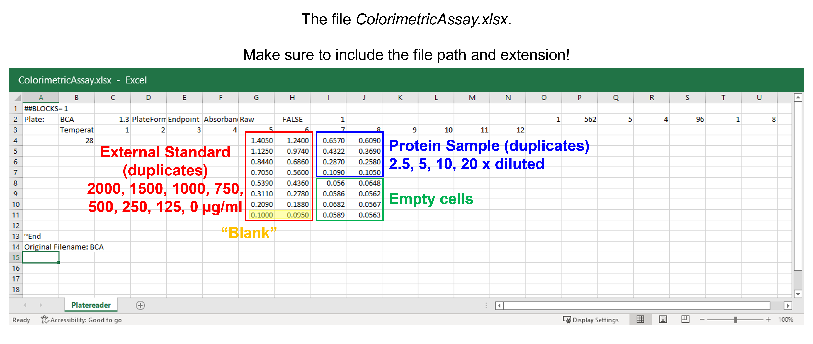
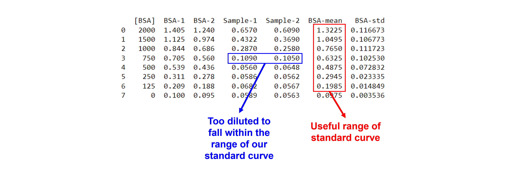

Colorimetric assay#
Introduction#
Colorimetric assays are based on a simple principle: add appropriate reagents to your protein samples to initiate a chemical reaction whose product is colored. The concentration of colored product, and its absorbance, is proportional to the initial protein concentration.
To calculate the protein concentration of an unknown sample, we use a standard curve that is generated from known protein standards.
When the relation between protein concentration of the known standards (X-axis) and their absorbance (Y-axis) is plotted, this produces a straight line or, in some cases, a parabola. They can be fit using
a line equation
a polynomial equation
Where \(Absorbance\) is the measured signal, \(x\) is the protein concentration of the known standards, and \(a\) and \(b\) (and \(c\)) are model parameters.
See here for more information.
Data#
The spreadsheet “ColorimetricAssay.xlsx” contains the absorbances measured at 562 nm of the external standards and unknown protein samples on a plate reader. All samples were measured in duplicate at the same time.
The absorbances for the eight external standards (2000, 1500, 1000, 750, 500, 250, 125, 0 \(\mu\)g/mL) are in A5 to H6. The 0 \(\mu\)g/mL external standard is also known as the blank. The absorbances for the unknown protein samples (dilution factor 2.5, 5, 10 and 20) are in A7 to D8. E7 to H8 are empty wells.
{kind=link}
Data analysis - creating the standard curve#
Exercise 46
Import the libraries needed. Use convenient naming.
Solution to Exercise 46
#Import the libraries
import numpy as np
import matplotlib.pyplot as plt
import pandas as pd
from scipy.optimize import curve_fit
Exercise 47
Read the data from the Excel file. Use only the columns and rows containing data, i.e. from A5 to H8. Name the columns BSA-1, BSA-2, Sample-1, and Sample-2. Store in a pandas DataFrame.
Solution to Exercise 47
Here’s one possible solution.
#Read the Excel file
dfCA = pd.read_excel ('../data/ColorimetricAssay.xlsx', #create a pandas DataFrame from the filename with file path and extension shown
sheet_name=0, #use the first sheet (no need to specifically include this as we use the default setting)
skiprows=3, #skip the first three rows
skipfooter=3, #skip the last three rows
usecols=[6,7,8,9], #only import columns 6 to 9 - be aware that column numbers start with zero!
header=None, #our data does not have column names
names=['BSA-1','BSA-2', 'Sample-1', 'Sample-2']) #use BSA-1, BSA-2, Sample-1, and Sample-2 as column names
print (dfCA) #print the DataFrame created
Exercise 48
Add a new column containing the concentrations of the eight standard points (i.e. 2000, 1500, 1000, 750, 500, 250, 125 and 0 \(\mu\)g/mL) to the existing DataFrame.
Solution to Exercise 48
Here’s one possible solution.
#Insert a column containing the concentrations of the standards
x1 = [2000, 1500, 1000, 750, 500, 250, 125, 0] #create a list with integers containing the concentrations
dfCA.insert(0, '[BSA]', x1) #insert the column at index 0 (i.e. make it the first column) in dfCA, name the column [BSA], and fill it with the data provided by x1
print(dfCA) #print the DataFrame created
Exercise 49
Plot the data: \([BSA]\) in \(\mu\)g/mL versus absorbance in AU.
Inspect the data!
Do we discern a clear trend in our data?
Do the data show a positive (sloping upward), negative (sloping downward), or no (spread out) correlation?
Do we notice a linear or a non-linear relationship between x- and y-values?
Are the errors concentration dependent? Time dependent?
Do we have outliers?
Where the values entered correctly?
Where there any experimental errors? E.g. a calculation error that we picked up afterwards when looking at our lab notebook?
Are the data points a mistake? E.g. a pipetting error?
To deal with outliers for replicate data points at each value of x, we can use weighted linear regression (see AMC TB 27-2007, Why are we weighting?, available here and further). Alternatively, when each concentration used to construct a calibration curve is measured at least three times, one can use statistical tests developed for identifying outliers amongst replicate values (see AMC TB 69-2015, Using the Grubbs and Cochran tests to identify outliers, available here).
Solution to Exercise 49
Here’s one possible solution.
#Plot the data
plt.figure(figsize=(7,5)) #start a figure object
plt.plot(dfCA['[BSA]'], dfCA['BSA-1'], #plot a set of x (= the concentrations),y (= the measured absorbances) data points
marker='o', color='gray', markersize=8) #use a round, gray marker with size 8
plt.plot(dfCA['[BSA]'], dfCA['BSA-2'], #plot another set of x (= the concentrations),y (= the measured absorbances) data points
marker='o', color='black', markersize=8) #use a round, black marker with size 8
plt.title('Standard Curve', fontsize=18) #title of graph
plt.xlabel('$[BSA]$ ($\mu$g $ml^{-1}$)', fontsize=14) #X-axis label
plt.ylabel('Absorbance (AU)', fontsize=14) #Y-axis label
plt.axis([-10, 2200, 0, 1.5]) #axis boundaries, in this case from -10 to 2200 for the X-axis and 0 to 1.5 for the Y-axis
plt.show() #show the figure object
We see a trend - a positive correlation; maybe a straight line, maybe a parabola - between \([BSA]\) and absorbance. No data points are spotted as outliers. We also see a concentration-dependent error: the variation in replicates seems larger at high \([BSA]\).
Exercise 50
Calculate the mean and the standard deviation for the duplicates, add them to the existing DataFrame.
Solution to Exercise 50
Here’s one possible solution.
#Calculate mean and stdev
dfCA['BSA-mean'] = dfCA.iloc[:,1:3].mean(axis=1) #we use axis 1 to get the mean of the elements of one row, we use columns 1 = BSA-1 and 2 = BSA-2, represented by [1:3]. The result is added to a new column.
dfCA['BSA-std'] = dfCA.iloc[:,1:3].std(axis=1) #we use axis 1 to get the standard deviation of the elements of one row, we use columns 1 = BSA-1 and 2 = BSA-2, represented by [1:3]. The result is added to a new column.
print(dfCA) #print the DataFrame created
Exercise 51
From the graph, it is unclear whether we have a line or a parabola. Define both functions that we can use to fit the data: a line and a quadratic curve.
Solution to Exercise 51
Here’s one possible solution.
#Define a line
def funcline(x, a, b): #create the function
"""
Return a line using slope and intercept
Args:
the slope, a
the intercept, b
Returns:
the line function "a * x + b"
"""
return a * x + b
#Define a quadratic curve
def funcpoly2(x, a, b, c): #create the function
"""
Return a quadratic curve using the first and second coefficients, a and b, and constant, c
Args:
the first coefficient, a
the second coefficient, b
the constant, c
Returns:
the quadratic curve function "a * x^2 + b * x + c"
"""
return a * x**2 + b * x + c
Exercise 52
Fit the means using both functions. Use a weighted fit.
Solution to Exercise 52
Here’s one possible solution.
#Fit with a line
params1, params_covariance1 = curve_fit(funcline, #the line function we try to fit to the data
dfCA['[BSA]'], #the x values, the concentrations
dfCA['BSA-mean'], #the y values, the measured absorbances
[0.1, 0.1], #the starting parameters for a (=the slope) and b (=the intercept)
sigma=dfCA['BSA-std'], #the standard deviations used for weighted fitting
absolute_sigma=True) #use sigma (=the standard deviations) in an absolute sense
#Fit with a quadratic curve
params2, params_covariance2 = curve_fit(funcpoly2, #the quadratic curve function we try to fit to the data
dfCA['[BSA]'], #the x values, the concentrations
dfCA['BSA-mean'], #the y values, the measured absorbances
[0.1, 0.1, 0.1], #the starting parameters for a (=the first coefficient), b (=the second coefficient), and c (=the constant)
sigma=dfCA['BSA-std'], #the standard deviations used for weighted fitting
absolute_sigma=True) #use sigma (=the standard deviations) in an absolute sense
Exercise 53
Report the fit parameters and standard errors on the fit parameters for both functions.
Solution to Exercise 53
Here’s one possible solution.
#Report the fit parameters with standard errors for the line function
print("Slope, a = ", params1[0], "±", np.sqrt(np.diag(params_covariance1))[0])
print("Intercept, b = ", params1[1], "±", np.sqrt(np.diag(params_covariance1))[1])
#Report the fit parameters with standard errors for the quadratic function
print("First coefficient, a =", params2[0], "±", np.sqrt(np.diag(params_covariance2))[0])
print("Second coefficient, b = ", params2[1], "±", np.sqrt(np.diag(params_covariance2))[1])
print("Constant, c = ", params2[2], "±", np.sqrt(np.diag(params_covariance2))[2])
Exercise 54
Calculate the residuals.
Solution to Exercise 54
Here’s one possible solution.
#Calculate the residuals for the line function
resid1 = dfCA['BSA-mean'] - funcline(dfCA['[BSA]'], *params1) #calculate the residuals, the star in _*params1_ unpacks the array so the two optimized parameter values become the second and third arguments (after the x-values) to the function
#Calculate the residuals for the quadratic function
resid2 = dfCA['BSA-mean'] - funcpoly2(dfCA['[BSA]'], *params2) #calculate the residuals, the star in _*params2_ unpacks the array so the two optimized parameter values become the second, third, and fourth arguments (after the x-values) to the function
Exercise 55
Produce a combined figure showing the residuals plots underneath the main plot with data with errorbars and both fitted curves. Make sure they are aligned and have the same X-axis so we can see which residual corresponds to which data point.
Tip: Instead of using the matplotlib.pyplot.plot function, use the matplotlib.pyplot.errorbar function to create a graph with error bars to visualize the variability of the data.
Inspect the quality of both fits! Which one is the best model?
Look at the graph of the experimental data and the fitted curve Do the experimental data and model match?
Look at the graph of the residuals. Are they around 0? Are they random or is there a trend? If the residuals display a systematic pattern, the model fits the data poorly.
Look at the fit parameters and the standard errors on the fit parameters. Are the fit parameters within (biological) reason? Are the standard errors on the fit parameters small? If a standard error on a fit parameter is bigger than the fit parameter, it is possible that there are not enough data points or that the model fits the data poorly.
Look at the goodness of fit statistics. But be careful! For example, R-square, ranging from 0 (worst possible fit) to 1 (best possible fit), compares the fit of your model to the fit of a horizontal line through the mean of all Y values, which is valid for linear regression, but not for non-linear regression. For those reasons, these fit statistics are not readily available as output of the SciPy curve_fit() function…
Solution to Exercise 55
Here’s one possible solution.
#Generate X-values to calculate the function
xvalues = np.linspace(0, 2200, 100) #create an array with 100 evenly distributed elements between 0 (included) and 2200 (included)
#Produce a combined graph
fig = plt.figure() #to create a figure object
xlimits = [0, 2200] #to make sure we use the same of the X-axis boundaries for both plots
ax1 = fig.add_axes([0.1, 0.53, 1, 0.81]) #to specify the coordinates, width and height of the top plot
ax2 = fig.add_axes([0.1, 0.1, 1, 0.4]) #to specify the coordinates, width and height of the bottom plot
ax1.errorbar(dfCA['[BSA]'], dfCA['BSA-mean'], #plot a set of x (= the concentrations),y (= the mean absorbances) data points
yerr=dfCA['BSA-std'], #use an error bar (= the standard deviations)
fmt='o', color='black', ecolor='black', #use a round, black marker with size 8
label='Data') #add a legend label
ax1.plot(xvalues, funcline(xvalues, *params1), #add the fitted line to plot. Use the generated BSA concentrations as x-values. Use the fitted parameters to calculate the y-values. The star in _*params1_ unpacks the array so the two optimized parameter values become the second and third arguments (after the x-values) to the function.
color="gray", linestyle='-', #use a gray line
label='Fit $y=ax+b$') #add a legend label
ax1.plot(xvalues, funcpoly2(xvalues, *params2), #add the fitted quadratic curve to plot. Use the generated BSA concentrations as x-values. Use the fitted parameters to calculate the y-values. The star in _*params2_ unpacks the array so the two optimized parameter values become the second, third, and fourth arguments (after the x-values) to the function.
color="red", linestyle='-', #use a red line
label='Fit $y=ax^2+bx$+c') #add a legend label
ax1.axis(xlimits + [0, 1.5]) #sets the X-axis and Y-axis boundaries for the top plot
ax1.tick_params(axis='x', bottom=False, labelbottom=False) #removes the ticks and tick labels on the X-axis for the top plot
ax1.set_ylabel('Absorbance (AU)') #adds Y-axis title for the top plot
ax1.legend(loc='upper left') #include legend
ax2.plot(dfCA['[BSA]'], resid1, #plot a set of x (= the concentrations),y (= the residuals for y=ax+b) data points
marker='o', color='gray', linestyle='-', markersize=8, #use gray datapoints size 8 and a line
label='Residuals $y=ax+b$') #add a legend label
ax2.plot(dfCA['[BSA]'], resid2, #plot a set of x (= the concentrations),y (= the residuals for y=ax^2+bx+c) data points
marker='o', color='red', linestyle='-', markersize=8, #use red datapoints size 8 and a line
label='Residuals $y=ax^2+bx$+c') #add a legend label
ax2.axhline(0, color='gray', linestyle="--") #adds a horizontal line at y=0
ax2.axis(xlimits + [-0.2,0.2]) #sets the X-axis and Y-axis boundaries for the bottom plot
ax2.set_xlabel('$[BSA]$ ($\mu$g $ml^{-1}$)') #adds X-axis title for the bottom plot, which is the same for the top plot
ax2.set_ylabel('Absorbance (AU)') #adds Y-axis title for the bottom plot
ax2.legend(loc='lower left') #include legend
plt.show() #show the figure object
Both fits look ok, but the quadratic curve fit looks better. We can see that there is a trend in the residuals (becoming more negative at higher \([BSA]\)). The fit paramaters seem within reason.
Data analysis - using the standard curve#
Two replicates at four different dilutions (2,5 x, 5 x, 10 x, and 20 x) of a protein sample of unknown concentration were prepared and the absorbance measured.
We calculate the concentration for each sample, and
we calculate the average concentration taking the dilution factors into account.
The absorbances of the diluted samples need to be within the range of the standard curve. One might need to discard measurements that are not.
In our example, the 20 x dilution factor is not within the range of the standard curve, e.g. ~0.1 < ~0.2, the lower detection limit in the standard curve. We need to exclude this data point.
{kind=link}
Calculate the concentration for each of the dilution factors#
To create a column with our solutions, we use the pandas.DataFrame.apply function. We first specify the function that defines the solution for the standard curve, and we then apply this function to the pandas DataFrame columns we want as input, i.e. Sample-1 and Sample-2.
def solcalc(y, a, b, c): #create the function
"""
Solve the quadratic equation for x when y is given using the quadratic formula
Args:
the first coefficient, a
the second coefficient, b
the constant, c
Returns:
the solution x-values of a quadratic equation with y given
"""
return (-b + np.sqrt(b**2 - 4 * a * (c-y)))/(2 * a)
dfCA['Solution-1'] = dfCA['Sample-1'].apply(solcalc, args=params2.tolist()) #apply the function that calculates the solution x-values of a quadratic equation with y given to the Sample-1 absorbances. Use the fitted parameters (converted from NumPy array to list) as arguments for the function (after the y-values).
dfCA['Solution-2'] = dfCA['Sample-2'].apply(solcalc, args=params2.tolist()) #apply the function that calculates the solution x-values of a quadratic equation with y given to the Sample-2 absorbances. Use the fitted parameters (converted from NumPy array to list) as arguments for the function (after the y-values).
Take the dilution factors into account#
We now add a column with the dilution factors. We calculate the dilution-factor corrected concentrations in two new columns.
dfCA['DF'] = [2.5, 5, 10, 20, 0, 0, 0, 0] #add a column containing the dilution factors
dfCA['Concentration-1'] = dfCA['Solution-1'] * dfCA['DF'] #add a column with the calculated values for undiluted samples for 1
dfCA['Concentration-2'] = dfCA['Solution-2'] * dfCA['DF'] #add a column with the calculated values for undiluted samples for 2
print(dfCA) #print the DataFrame
Calculate the overal concentration#
We extract the data with the concentrations we want to use to calculate the average concentration in a new DataFrame, called. We then calculate the mean and standard deviation for all values in the new DataFrame.
#Calculate the overal concentration
dfCAnew=dfCA.iloc[0:3,-2:] #create a new DataFrame containing all values you want to calculate the mean and standard deviation for
print(dfCAnew) #print the new DataFrame
print(np.array(dfCAnew).mean()) #convert the new DataFrame into a NumPy array and calulcate the mean of all elements
print(np.array(dfCAnew).std()) #convert the new DataFrame into a NumPy array and calulcate the standard deviation of all elements
The concentration of the undiluted, original, protein sample is 2018 \(\pm\) 242 \(\mu\)g/mL. The error is derived from technical repeats.